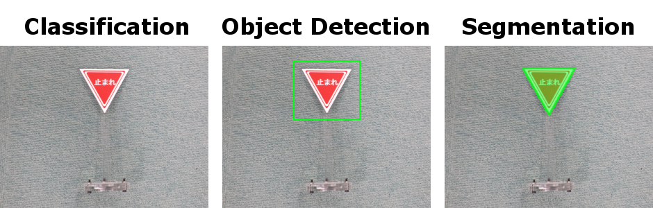

【タイトル】
レベル3：ニューラルネットワークで道路標識を検出する
【目標】
カメラ映像を取得し、道路標識を検出する
【画像】


【動画】
止まれを検出する動画：./document/stop.mp4
走行しながら道路標識を検出する動画：./document/course160x120.mp4
【実行環境】
Fabo TYPE1 ロボットカー
* USB Webcam
* Raspberry Pi3
* Jessie Lite
* docker
* Ubuntu
* Python 2.7
* OpenCV 2.4
* Tensorflow r1.1.0
Jetson TX2
* USB Webcam
* JetPack 3.1
* Ubuntu
* Python 3.6
* OpenCV 3.3
* Tensorflow r1.4.1
【実行】
インストール方法
コースの準備
Raspberry Pi3での実行方法
Jetson TX2での実行方法
【目次】
物体検出の紹介
* object detection
* [OpenCV] [テンプレートマッチング]
* [Python] [Selective Search]
* [Neural Networks] [SSD: Single Shot MultiBox Detection]
* [Python/TensorFlow] [TensorFlow Object Detection API]
[Python/OpenCV/TensorFlow] Balancap SSD-Tensorflowを使う
* インストール
* demo実行
* 扱える学習データフォーマット
* 学習データを作成する
* 学習コードの作成と学習実行
* 検出実行
* カメラ映像の読み込み
* ストリーミング配信
* ストリーミング解析実行
* 動画に保存
ディレクトリとファイルについて
開発/学習/実行環境について
インストール方法
インストール済みのロボットカー/Jetson TX2を用意しているので省略します。
コースの準備
ここは画像を元に解析をおこなう項目なので、ロボットカーは走行しないのでコースの準備は不要です。
Raspberry Pi3での実行方法
1. ロボットカーのRaspberry Pi3にログインします
USER:pi
PASSWORD:raspberry
ssh pi@192.168.xxx.xxx
2. rootになってdockerコンテナIDを調べます
sudo su
docker ps -aCONTAINER ID IMAGE COMMAND CREATED STATUS PORTS NAMES
2133fa3ca362 naisy/fabo-jupyter-armhf "/bin/bash -c 'jup..." 3 weeks ago Up 2 minutes 0.0.0.0:6006->6006/tcp, 0.0.0.0:8091->8091/tcp, 0.0.0.0:8888->8888/tcp hardcore_torvalds
STATUSがUpになっているコンテナIDをメモします。
3. dockerコンテナにログインします
docker exec -it CONTAINER_ID /bin/bash
docker exec -it 2133fa3ca362 /bin/bash
CONTAINER_IDにはベースイメージがnaisy/fabo-jupyter-armhfの2133fa3ca362を使います。
4. ロボットカーのディレクトリに移動します
cd /notebooks/github/RobotCarAI/level3_object_detection/
lstotal 92
1467711 4 ./ 1468006 32 README.md
1446753 4 ../ 1468007 4 roadsign_data/
1467903 4 demo_images/ 1446969 8 run_ssd.py
1467990 4 install_scripts/ 1446978 12 run_streaming.py
1467997 4 lib/ 1469662 4 script_define.conf
1468000 4 model/ 1474562 4 train_scripts/
1468003 4 patch_to_SSD-Tensorflow/
5. スクリプト設定ファイルを編集します
dockerのディレクトリパスに合わせて編集します。
vi script_define.conf編集前
GIT_DIR=/home/ubuntu/notebooks/github
...
VOC_DATASET_DIR=/home/ubuntu/notebooks/github/RobotCarAI/level3_object_detection/roadsign_data/PascalVOC
TF_DATASET_DIR=/home/ubuntu/notebooks/github/RobotCarAI/level3_object_detection/roadsign_data/tfrecords編集後
GIT_DIR=/notebooks/github
...
VOC_DATASET_DIR=/notebooks/github/RobotCarAI/level3_object_detection/roadsign_data/PascalVOC
TF_DATASET_DIR=/notebooks/github/RobotCarAI/level3_object_detection/roadsign_data/tfrecords
6. インストールスクリプトに実行権限を付与して実行します
chmod 755 ./install_scripts/*.sh
./install_scripts/install.sh
すでに実行してある場合は、再実行すると以下のようになりますので、パッチを戻すか？という問いにはnで答えてください。
fatal: destination path 'SSD-Tensorflow' already exists and is not an empty directory.
Archive: ssd_300_vgg.ckpt.zip
inflating: ssd_300_vgg.ckpt.index
patching file /notebooks/github/SSD-Tensorflow/preprocessing/ssd_vgg_preprocessing.py
Reversed (or previously applied) patch detected! Assume -R? [n] n
Apply anyway? [n] n
Skipping patch.
1 out of 1 hunk ignored -- saving rejects to file /notebooks/github/SSD-Tensorflow/preprocessing/ssd_vgg_preprocessing.py.rej
patching file /notebooks/github/SSD-Tensorflow/nets/ssd_vgg_300.py
Reversed (or previously applied) patch detected! Assume -R? [n] n
Apply anyway? [n] n
Skipping patch.
3 out of 3 hunks ignored -- saving rejects to file /notebooks/github/SSD-Tensorflow/nets/ssd_vgg_300.py.rej
よくわからなくなったら、SSD-Tensorflowのディレクトリを削除してからインストールスクリプトを実行してください。
rm -rf /notebooks/github/SSD-Tensorflow/
./install_scripts/install.sh
6. トレーニングスクリプトに実行権限を付与して実行します
chmod 755 ./train_scripts/*.sh
./train_scripts/setup_mytrain.shtotal objects:891
label:objects:images
stop:149:142
speed_10:202:185
speed_20:356:349
speed_30:184:184
実際の学習は多くのGPUメモリを搭載したマシンが必要となるので、ここでは学習は行いません。
7. 道路標識の検出を実行します
python run_ssd.pytime:116.36789203 clock:54.87105800
time:15.70358896 clock:51.92819900
time:14.47124100 clock:51.34533300
time:14.39473701 clock:50.40863100
time:17.08592391 clock:51.68568700
time:14.97833300 clock:47.98345900
time:12.63103414 clock:47.83602600
time:12.64851999 clock:48.24852800
time:12.63877583 clock:47.83689600
time:12.62398911 clock:48.13235200
time:12.84498405 clock:48.04971600
time:12.57889819 clock:47.78148500
time:12.74054813 clock:48.23995300
end
Raspberry Pi3は物体検出を行うには非常に非力なので、実行には少し時間がかかります。
8. 検出結果を確認します
ブラウザでRaspberry Pi3のjupyterにアクセスします
http://192.168.xxx.xxx:8888/tree/github/RobotCarAI/level3_object_detection/output/
jupyterのpasswordは別途説明があるかと思います。
result_*.jpg が検出結果の画像になります。
入力に使ったデータは、result_の付いていない画像になります。
Jetson TX2での実行方法
1. Jetson TX2にログインします
USER:ubuntu
PASSWORD:ubuntu
ssh ubuntu@192.168.xxx.xxx
用意してあるJetson TX2はDockerを使っていないので、Raspberry Pi3の時のようなdockerコンテナへのログインはありません。
2. ロボットカーのディレクトリに移動します
cd ~/notebooks/github/RobotCarAI/level3_object_detection/
lstotal 92
1467711 4 ./ 1468006 32 README.md
1446753 4 ../ 1468007 4 roadsign_data/
1467903 4 demo_images/ 1446969 8 run_ssd.py
1467990 4 install_scripts/ 1446978 12 run_streaming.py
1467997 4 lib/ 1469662 4 script_define.conf
1468000 4 model/ 1474562 4 train_scripts/
1468003 4 patch_to_SSD-Tensorflow/
3. インストールスクリプトに実行権限を付与して実行します
スクリプト設定ファイルはJetson TX2の環境に合わせて用意してあるので編集の必要はないので、インストールスクリプトの実行を行ってください。
chmod 755 ./install_scripts/*.sh
./install_scripts/install.sh
すでに実行してある場合は、再実行すると以下のようになりますので、パッチを戻すか？という問いにはnで答えてください。
fatal: destination path 'SSD-Tensorflow' already exists and is not an empty directory.
Archive: ssd_300_vgg.ckpt.zip
patching file /home/ubuntu/notebooks/github/SSD-Tensorflow/preprocessing/ssd_vgg_preprocessing.py
Reversed (or previously applied) patch detected! Assume -R? [n] n
Apply anyway? [n] n
Skipping patch.
1 out of 1 hunk ignored -- saving rejects to file /home/ubuntu/notebooks/github/SSD-Tensorflow/preprocessing/ssd_vgg_preprocessing.py.rej
patching file /home/ubuntu/notebooks/github/SSD-Tensorflow/nets/ssd_vgg_300.py
Reversed (or previously applied) patch detected! Assume -R? [n] n
Apply anyway? [n] n
Skipping patch.
3 out of 3 hunks ignored -- saving rejects to file /home/ubuntu/notebooks/github/SSD-Tensorflow/nets/ssd_vgg_300.py.rej
よくわからなくなったら、SSD-Tensorflowのディレクトリを削除してからインストールスクリプトを実行してください。
rm -rf /home/ubuntu/notebooks/github/SSD-Tensorflow/
./install_scripts/install.sh
4. トレーニングスクリプトに実行権限を付与して実行します
chmod 755 ./train_scripts/*.sh
./train_scripts/setup_mytrain.shtotal objects:891
label:objects:images
stop:149:142
speed_10:202:185
speed_20:356:349
speed_30:184:184
実際の学習は多くのGPUメモリを搭載したマシンが必要となるので、ここでは学習は行いません。
Jetson TX2は8GBのGPUメモリがありますが、これでも学習には向きません。
この学習は、AWS p3.2xlargeインスタンスで1日程度実行してあります。
5. 道路標識の検出を実行します
python run_ssd.pytime:25.23302293 clock:23.77420100
time:1.77238727 clock:1.49304700
time:1.77872753 clock:1.42159600
time:1.78329659 clock:1.58512700
time:1.76960158 clock:1.57257700
time:1.41074395 clock:1.13222900
time:0.36464643 clock:0.34475100
time:0.36422086 clock:0.34886500
time:0.36535668 clock:0.35530400
time:0.35956836 clock:0.34501500
time:0.36577463 clock:0.35173300
time:0.37001014 clock:0.35788600
time:0.36742902 clock:0.35056400
end
Jetson TX2はRaspberry Pi3よりかなり実行速度が速いことが分かります。
8. 検出結果を確認します
ブラウザでJetson TX2のjupyterにアクセスします
http://192.168.xxx.xxx:8888/tree/github/RobotCarAI/level3_object_detection/output/
jupyterのpasswordは別途説明があるかと思います。
result_*.jpg が検出結果の画像になります。
入力に使ったデータは、result_の付いていない画像になります。
物体検出の紹介
画像ベースで識別する方法は大きくわけて3種類あります。

Classificationは画像1枚で判断します。
Object Detectionは画像の特定の領域で判断します。
Segmentationは画像の1画素単位で判断します。
Semantic Segmentationは1ピクセル毎のクラス分類ですが、Mask R-CNNではInstance Segmentationと呼ばれる物体のパーツ毎の識別になります。
Classificationの方が処理速度が速く、Segmentationになると処理速度が遅くなります。
今回はSSD300を使ったObject Detectionで道路標識を検出します。
SSDのデメリットとして、小さい物体は検出出来ない問題があります。SSDではアスペクト比を変更して学習するため、ボックスが潰れてしまうために発生します。
[OpenCV] テンプレートマッチング
昔からある方法としては、黒枠などのテンプレート画像を検索する方法があり、OpenCVで使う事が出来ます。
検出には入力画像内にあるテンプレート同様の画像サイズが、用意したテンプレート画像サイズとほぼ一致している必要があるため、複数のサイズでテンプレートを用意します。
黒枠を検出したら、その内部をCNNで画像識別して結果を得ます。
[Python] Selective Search
候補領域を選出し、その内部をCNNで画像識別して結果を得ます。
テンプレートの用意は不要ですが、候補領域はアルゴリズムで算出されるため、領域が出なければ識別にかけることは出来ません。
1つの画像に候補領域が大量に出てくると識別回数が増えて遅くなります。
[Neural Networks] SSD: Single Shot MultiBox Detection
VGG16を内部に持ち、DeepLearningによる物体検出と識別を行います。
TensorFlowでのコードが公開されていますので、今回はこれを使うことにします。
[Python/TensorFlow] TensorFlow Object Detection API
TensorFlow公式で用意されている物体検出APIです。
様々なモデルを使うことが出来ますが、バージョンアップに伴うトラブルもあるため、今後に期待します。
おすすめの物体検出として、TensorFlow Object Detection APIの実行効率を大幅に改修したssd_movilenet_v1があります。
オリジナル：realtime_object_detection
道路標識版：realtime_object_detection
ssd_mobilenet_v1の学習方法：train_ssd_mobilenet
[Python/OpenCV/TensorFlow] Balancap SSD-Tensorflowを使う
TensorFlowを使った物体検出として、Balancap SSD-Tensorflowを使って道路標識を学習し、Jetson TX2で実行してみます。 Balancap SSD-Tensorflow：https://github.com/balancap/SSD-Tensorflow
インストール
インストール先や学習コード生成に必要な情報はスクリプト設定ファイルで用意しました。環境に合わせて修正してください。
デフォルトでは/home/ubuntu/notebooks/github/...としてあります。
スクリプト設定ファイル：./script_define.conf
1 2 3 4 5 6 7 8 9 10 11 12 13 14 15 16 17 18 19 20 21 22 | # Balancap SSD-Tensorflowのディレクトリ GIT_DIR=/home/ubuntu/notebooks/github SSD_TENSORFLOW_DIR=$GIT_DIR/SSD-Tensorflow # データ名 MY_TRAIN=roadsign # 学習データディレクトリ VOC_DATASET_DIR=/home/ubuntu/notebooks/github/RobotCarAI/level3_object_detection/roadsign_data/PascalVOC TF_DATASET_DIR=/home/ubuntu/notebooks/github/RobotCarAI/level3_object_detection/roadsign_data/tfrecords # 道路標識の学習データで使うラベル # LABELS[0]はbackground(その他)用に空けておく # 学習データのラベルを増やす時はここにも追加する LABELS[1]=stop LABELS[2]=speed_10 LABELS[3]=speed_20 LABELS[4]=speed_30 # 新規VGG16 checkpoint CHECKPOINT_PATH=$SSD_TENSORFLOW_DIR/checkpoints/vgg_16.ckpt # 学習を再開するcheckpoint LEARNED_CHECKPOINT_PATH=$GIT_DIR/RobotCarAI/level3_object_detection/output/model.ckpt-7352 |
Balancap SSD-Tensorflow インストールスクリプト：./install_scripts/install.sh
chmod 755 ./install_scripts/*.sh
./install_scripts/install.sh
demo実行
jupyterでSSD-Tensorflow/notebooks/ssd_notebook.ipynb を開いて実行します。
扱える学習データフォーマット
SSD-Tensorflowで扱うことの出来るデータフォーマットはPascalVOC形式になります。
自前の学習データを用意する際は、PascalVOC形式で作成する必要があります。
学習データを作成する
学習データはGUIツールのLabelImgを使って作成します。
LabelImg：https://github.com/tzutalin/labelImg
LabelImg インストールスクリプト：./install_scripts/install_labelimg.sh
./install_scripts/install_labelimg.sh

GUIツールなので画面のある開発環境で学習データを作成してください。
labelImgで作成したラベルは画像ファイルと同じディレクトリに作成されます。
Balancap SSD-Tensorflowでは、TF-Recordへのコンバート時は画像ファイルをJPEGImagesに、ラベルファイルをAnnotationsに分けておく必要があります。
画像データ:./roadsign_data/PascalVOC/JPEGImages/
ラベルデータ:./roadsign_data/PascalVOC/Annotations/
学習データを作ったら、学習用コードの作成、データの変換、学習、となります。
学習コードの作成と実行
Balancap SSD-Tensorflowの学習コードは、元の学習コードをコピーしてスクリプトで修正して作成します。
スクリプト設定ファイルで以下を設定します。 学習データディレクトリ ラベル
スクリプト設定ファイル：./script_define.conf
1 2 3 4 5 6 7 8 9 10 11 | # 学習データディレクトリ VOC_DATASET_DIR=/notebooks/github/RobotCarAI/level3_object_detection/roadsign_data/PascalVOC TF_DATASET_DIR=/notebooks/github/RobotCarAI/level3_object_detection/roadsign_data/tfrecords # 道路標識の学習データで使うラベル # LABELS[0]はbackground(その他)用に空けておく # 学習データのラベルを増やす時はここにも追加する LABELS[1]=stop LABELS[2]=speed_10 LABELS[3]=speed_20 LABELS[4]=speed_30 |
スクリプトコードを作成し、PascalVOCデータをTF-Recordsに変換して学習を実行します。
スクリプト作成コード：./train_scripts/setup_mytrain.sh
データ変換コード：./train_scripts/convert_PascalVOC_to_TF-Records.sh
学習実行コード：./train_scripts/train_ssd.sh
chmod 755 ./train_scripts/*
./train_scripts/setup_mytrain.sh
./train_scripts/convert_PascalVOC_to_TF-Records.sh
./train_scripts/train_ssd.sh
./train_scripts/freeze_graph.sh
学習はGPUを搭載した学習環境でおこないます。
一定時間毎にcheckpointが保存されるので、適当なところでCtrl_z; kill %%で学習を停止してください。
途中のチェックポイントから学習を再開する際は、スクリプト設定ファイルのLEARNED_CHECKPOINT_PATHに再開するチェックポイントを指定して学習を再開します。
スクリプト設定ファイル：./script_define.conf
1 2 | # 学習済みcheckpoint LEARNED_CHECKPOINT_PATH=$GIT_DIR/RobotCarAI/level3_object_detection/output/model.ckpt-7352 |
学習再開クリプト：./train_scripts/train_ssd_continue.sh
./train_scripts/train_ssd_continue.sh
Balancap SSD-Tensorflowではjpegしか扱えないため、pngで画像を用意した場合は変換が必要になります。
apt-get install imagemagick
# png to jpg
for i in *.png ; do convert "$i" "${i%.*}.jpg" ; done
# replace xml
find ./ -name "*.xml" | xargs sed -i 's/\.png/.jpg/g'
検出実行
pbファイルを読み込んで実行します。
検出結果は層毎に出てくるため、SSDNetクラスを使って集計を行います。
検出実行コード：./run_ssd.py
1 2 | # 予測実行 rclasses, rscores, rbboxes = process_image(sess,cv_bgr) |
検出実行コード：./run_ssd.py
python run_ssd.py
Jetson TX2
time:19.86998034 clock:18.56985800 time:1.03599119 clock:0.93754800 time:1.04325247 clock:0.87934800 time:1.03981328 clock:0.94516900 time:1.04054499 clock:0.94298500 time:0.78034067 clock:0.67906600 time:0.78434491 clock:0.73667700 time:0.78234601 clock:0.72538500 time:0.78174305 clock:0.72879300 time:0.78478503 clock:0.73397900 time:0.78188086 clock:0.72555700 time:0.78177857 clock:0.73014300 time:0.78230286 clock:0.72738200 end
Raspberry Pi3
time:120.14480400 clock:55.83521200 time:16.20854115 clock:52.09492600 time:14.21805596 clock:51.28959800 time:15.57702303 clock:51.27450300 time:15.50608397 clock:51.43209300 time:13.86155987 clock:47.86049200 time:12.60688901 clock:47.83934000 time:12.60392714 clock:48.27811200 time:12.68156099 clock:47.87609600 time:12.59844589 clock:48.02762300 time:12.67574501 clock:48.29297900 time:12.60959601 clock:47.78995400 time:12.69101310 clock:48.27239100 end
最初の1回目はJITになっているのか遅いです。
2回目以降はJetson TX2とRaspberry Pi3では物体検出の実行速度に15倍以上の差があります。
/notebooks/github/RobotCarAI/level3_object_detection/output/以下に検出元画像と検出結果画像があります。
カメラ映像の読み込み
画像の時と同じで、カメラ映像の時も1フレームを1画像として読み込みます。
画像の読み込み
検出実行コード：./run_ssd.py
1 | cv_bgr = cv2.imread(DEMO_DIR+"/" + file_name) |
カメラ映像の読み込み
WebCamストリーミング解析コード：./run_streaming.py
1 2 3 | vid = cv2.VideoCapture(1) # WebCam Jetson TX2 /dev/video1 ... retval, cv_bgr = vid.read() |
Jetson TX2の場合は/dev/video1がUSBカメラデバイスなので、cv2.VideoCapture(1)となります。
Raspberry Pi3やPCでは/dev/video0がUSBカメラデバイスなので、cv2.VideoCapture(0)となります。
UDPストリーミングで動画が送られている場合は、vid = cv2.VideoCapture('udp://localhost:8090')のようにUDPポートを指定して受信します。
USBカメラが未接続だったり、ストリーミングが開始されていない時は映像取得に失敗します。
ストリーミング配信
FFMPEG UDP Streamingを使う場合
送信側コマンド(192.168.0.77は受信側アドレス)
ffmpeg -thread_queue_size 1024 -r 30 -video_size 160x120 -input_format yuyv422 -i /dev/video0 -pix_fmt yuv422p -threads 4 -f mpegts udp://192.168.0.77:8090
受信側確認コマンド(動画プレイヤーが立ち上がるので、画面のあるPCで確認する場合になります)
ffplay udp://localhost:8090
ロボットカーのRaspberry Pi3では、level3_demo_streamingでFFMPEG用にdockerイメージを用意してありますので、それを使うことができます。
サーバに合わせてIPアドレスを変更してください。
sudo su
dockerコンテナを作成する
docker run -itd --device=/dev/video0:/dev/video0 ffmpeg /bin/bash -c "ffmpeg -thread_queue_size 1024 -r 1 -video_size 160x120 -input_format yuyv422 -i /dev/video0 -pix_fmt yuv422p -threads 4 -f mpegts udp://192.168.0.77:8090"95cbdd5f98b6981259e6b29a7e11ea3c24c945e7157ec4725a2d8d8e3491c918
AWSで受信する場合は、UDPポートで受信出来るようにするために、外部IPアドレスを持ち、セキュリティグループにUDPポート番号を設定必要があります。
Jetson TX2で受信する場合は、内部IPアドレスとポート番号だけで受信出来ます。
ストリーミング解析実行
ストリーミング時はUDPポートを読み込みに指定します。 WebCamストリーミング解析コード：./run_streaming.py
1 | vid = cv2.VideoCapture('udp://localhost:8090') # UDP Streaming |
分類結果、スコア、物体の領域が得られるので、例えばそれを画像に描画して動画に保存することが出来ます。
ロボットカーの場合は描画や動画への保存は不要ですが、停止を検出したら数秒止まる、速度を検出したら速度を変更する、等の処理を行うことになります。
動画に保存
予測結果を画像に描画して動画で保存します。ここでは結果を見たいだけなので、保存する動画のFPSは適当に処理性能くらいにしておきます。
Jetson TX2はメモリが不足になりやすいため、OOM(Out Of Memory)等で落ちやすいです。
Jetson TX2では、pbファイル化して検出に不要なオペレーションをそぎ落としてメモリ消費量を抑えることで、SSDの結果を動画に保存することが出来ます。
WebCamストリーミング解析コード：./run_streaming.py
1 2 3 4 5 6 7 8 9 10 | # FPSは処理速度を実際の見てから考慮する #out = cv2.VideoWriter(OUTPUT_DIR+'/output.avi', int(fourcc), fps, (int(vidw), int(vidh))) out = cv2.VideoWriter(OUTPUT_DIR+'/output.avi', int(fourcc), 2.1, (int(vidw), int(vidh))) ... # 予測実行 rclasses, rscores, rbboxes = process_image(sess,cv_bgr) # 枠を描く write_bboxes(cv_bgr, rclasses, rscores, rbboxes) # avi動画に保存する out.write(cv_bgr) |
動画はavi形式で/notebooks/github/RobotCarAI/level3_object_detection/output/output.aviに保存されます。
[ディレクトリとファイルについて]
- ディレクトリについて
- documment/ ドキュメント関連
- install_scripts/ インストールスクリプト
- roadsign_data/ 道路標識データ
- train_scripts/ 学習関連スクリプト
- ファイルについて
- README.md このファイル
- scritp_define.conf ディレクトリパス等設定ファイル
- run_ssd.py 検出実行コード
- run_streaming.py Webcamストリーミング動画解析コード
- install_scripts/install.sh インストールスクリプト
- install_scripts/install_balancap_ssd-tensorflow.sh Balancap SSD-Tensorflow ダウンロードスクリプト
- install_scripts/setup_bugfix.sh Balancap SSD-Tensorflow バグ修正スクリプト
- install_scripts/patch_to.sh ファイル修正スクリプト
- install_scripts/install_balancap_ssd-tensorflow.sh Balancap SSD-Tensorflow ダウンロードスクリプト
- install_scripts/install_labelimg.sh LabelImg インストールスクリプト
- model/ssd_roadsign.pb 学習済みモデル
- train_scripts/setup_mytrain.sh 学習コード生成スクリプト
- train_scripts/convert_PascalVOC_to_TF-Records.sh 学習データ変換スクリプト
- train_scripts/train_ssd.sh 学習実行スクリプト
- train_scripts/train_ssd_continue.sh 学習再開スクリプト
- train_scripts/freeze_graph.sh モデル凍結スクリプト
- train_scripts/add_input_x.py 学習済みcheckpointに入力名を追加するコード
- train_scripts/freeze_graph.py モデル凍結コード
[開発/学習/実行環境について]
- 開発環境
- ラベル作成はGUIツールを使うため、画面のある環境が必要です。
- 学習環境
- 学習環境はGPUが使える環境が必要です。
- 実行環境
- 実行環境はUSBカメラが使える環境が必要です。
- クラウドで実行する場合は、PCかRaspberryPi3等にUSBカメラを付けてFFMPEGを使ってカメラ映像をクラウド実行環境にUDP Streaming配信する必要があります。
- USBカメラの代わりに画像ファイル、動画ファイルの読み込みも可能です。その場合はOpenCVの公式ドキュメントを参考にしてください。